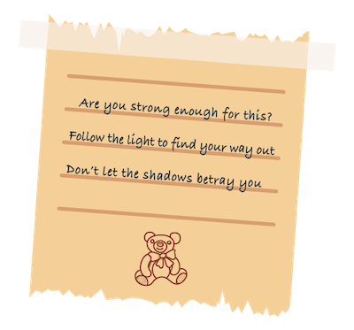

STORYLINE
|  |
How do you deal with a thing like fear?This game is meant to be a representation of overcoming phobias. Based in a third-person point of view, the player travels through different areas to fight creatures and escape. Each level is based on a different type of phobia. As you play, you will experience challenges that immerse you into the experience of the game. A mischievous spirit has stolen something precious from the player. Why did the spirit steal this precious item and what does it want? Maybe there’s more to this mischievous spirit than it leads on to be. The player must chase the spirit down through caverns to find out and retrieve the item. However, the player is generally scared of many things, so this will be a tricky adventure to face your fears of many phobias. |
LEVELS
Level 01 | NYCTOPHOBIAThis level is focused on the fear of darkness. The player begins in the attic of a house, guiding their way out with little light. They will need to find appropriate keys to unlock the doors. They must also explore two other floors, and the basement, to find rune symbols. There will be monsters placed throughout the level that can jump out and drag you into the depths of darkness. The player completes the level by collecting all their items and getting to the exit door of the house in time. |
|
Level 02 | CLAUSTROPHOBIAThe goal of this level is to get out of the maze. In the beginning, the walls will be narrow. As the player continues, the path are spaced out to have a wide space to walk through. This setup will mimic the feeling of “the walls closing in on you” when you are suffering from claustrophobia. If the player begins to go through the incorrect path, monsters will jump out at them. The player must continue on the path leading them out, avoiding trapdoors and monsters, to complete the level. |
THE TEAM
About Us
The developers of this game are made up of college students based in NYC.
We consist of level designers, graphic designers, sound specialists, UI/UX specialists, and programmers.
Credits
| Creative Director | Managing Director |
| Hassan Fares | Renuka Sookdeosingh |
| Level Designers | Lead Programmer |
| Edward Brackye | Edwin Samaniego |
| Kevin Djatschenko | |
| Sound Specialist | Graphic Artist |
| Christian Brezovsky | Shequana Garnett |